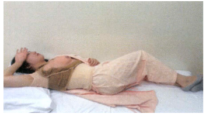
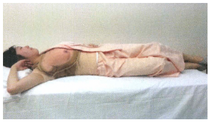
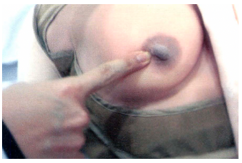

34. 유방통/유방덩이

원인 | |||||
유방통 | 호르몬 요인 | 생리주기, 약물 등 | |||
| 기질적 요인 | 감염: 유방울혈 -> 유방염/유선염, -> 고름집/농양 (유방덩이) 비감염: 주기유방병증, 피임약/호르몬대체요법, 카페인에의한유방통, 유방 외상 | |||
유방덩이 | 정상 | 정상 유방, 섬유낭 변화 | |||
| 양성 종양 | 유방낭종 / 섬유선종, 엽상종 / 관내유두종 / 젖낭종 | |||
| 악성 종양 | 유방암 | |||
| 감염 | 고름집, 유방염 등 | |||
평가목표 1) 유방통: 병력청취와 신체진찰로 유방통을 분류, 경과와 치료계획 수립 2) 유방덩이: 병력청취와 신체진찰로 유방덩이의 특성/모양/성질 파악 -> 악성, 양성 구분하고 유방암 위험인자 파악, 필요한 진단과 기본적인 치료계획 수립 | |||||
구체적인 성과 | |||||
병력 청취
| 유방 외 질환과의 감별 | 흉벽 통증: 가슴뼈 부위를 눌렸을 때 더 아픈지 (갈비연골염) 연관통: 심장질환, 담낭질환, 폐렴 등의 주변 장기의 문제 | |||
| 유방통의 특성 확인 | 주기성: 생리주기에 따른 통증이면 대개 정상 비주기성: 생리와 무관하게 한 곳 통증 시 유관확장증/유선염/종양 감별 | |||
| 유방암의 위험인자 확인 | 가족력, 호르몬 노출(초경/폐경 시기, 출산/수유력, HRT/피임약) | |||
| 유방덩이의 성상 파악 | 어떻게 발견: 우연히/자가검진 변화 속도: 갑자기/서서히 유두 분비물: 혈성 - IDP/암 | |||
| 생리 주기에 따른 변화 확인 | 생리 전 커졌다가 후 작아지면 섬유낭성 변화 등 양성 가능성↑ | |||
| 유방암의 위험인자 확인 | 가족력, 호르몬 노출(초경/폐경 시기, 출산/수유력, HRT/피임약) | |||
신체 진찰 | 압통의 부위 확인 유방덩이의 유무 확인 주변 림프절의 이상소견 확인 | 어디가 아픈가요? 짚어보세요 -> 정확한 압통점 찾기 (ddx. 갈비연골염) 유방 전체 4분면 체계적 촉진 통해 덩이 확인 겨드랑이/쇄골 위 림프절 촉진 | |||
| 유방의 정상 여부 유방덩이의 유무 확인 신체진찰 후 덩이의 특징 기술 악성 병변 의심 시 악성 병변의 진행 정도를 평가 | 정상: 대칭성, 피부에 함몰/Peau d'orange 소견 없음 4분면 꼼꼼히 확인 위치/개수/모양/경계/딱딱/고정 등의 특징 파악 림프절까지 종합해 진행 정도 파악 => 고정되어 있고 딱딱하면 악성 시사! | |||
진단 및 치료 | 유방통 1. 확진 및 감별 진단을 위한 검사계획 수립 2. 통증 완화를 위한 치료계획 수립 => 악성 병변 배제 & 통증 유형 분류 | 유방덩이 1. 적절한 검사계획을 수립 2. 급성 조치가 필요한 경우를 감별하고 치료계획 수립 3. 수술이 필요한 환자 감별 | |||
| 유형 분류: 주기성/비주기성 영상검사: 유방촬영술, 유방 초음파 | 임상 진찰 + 영상검사 + 조직검사
| |||
| 비약물적 치료: 생활습관 교정, 물리적 지지 약물적 치료: 국소 진통제, 호르몬 조절제 | 유방 농양 시 즉각적 절개 및 배농 + 항생제 수술: 악성 종양, 엽상 종양, 증상이 있는 양성 덩이 | |||
환자교육 | 유방통
| 생리 주기와의 관련성: 대부분 여성H 변화에 의한 정상적인 반응 통증 완화를 위한 치료의 필요성: 일상생활에 지장있다면 약물 치료/스포츠브라 사용 고려 | |||
| 유방덩이 | 자가 검진법 교육: 시기, 방법 설명 선별검사의 유용성 상담: 유방암은 일찍 발견할수록 높은 완치율. 위험인자 있을수록 꾸준히 시행 | |||
| PPI | 불안 배려: 통증의 경우 암의 직접적인 신호는 아니기에 안심시키기 수치심 방지: 부분 노출(반대쪽 가리기), 검진 시 여성 간호사가 함께 있다고 말하기 | |||
질환 | 질환 설명 | 병력청취 | 신체진찰 | 검사 | 치료 | |
유방통 | 감염 | |||||
| 유방울혈
| 수유 초기에 젖이 과하게 차서 가슴이 팽팽하게 붓고 아픈 것 | 출산 3~5일 후 빨갛게 부어오름 전체적 통증, 열감 | 빨갛게 부어오름, 단단/팽팽 양측성 | 유방초음파 | 아이스팩, 핫팩 마사지 진통제 규칙적으로 젖비우기 |
| 유선염 (유방염) 0+1 | 유방 조직에 세균 감염으로 염증이 생김 | 출산 10일 이후 모유수유, 한쪽유방 발열 및 국소적 통증 전신 증상 | 발적, 열감, 압통 보통 일측성 (국소적인 경결) | 유방촬영술 유방초음파 혈액검사 | 수유 중단 X 더 자주 카페인 자제 아이스팩, 핫팩 마사지 진통제, 필요시 항생제 |
| 유방농양 2+1 | 유선염이 진행되어 유방 조직 안에 고름이 생김 | 발열, 오한, 통증, 열감, 멍울 스치기만 해도 아픔 | 발적, 압통 (파동이 느껴지는 국소 멍울) | 유방촬영술 유방초음파 혈액검사 | 바늘흡인 절개배농 항생제 |
| 비감염/호르몬 | |||||
| 유방외상 | 가슴 부위를 부딪히거나 다침. 안쪽 조직이 손상되었을 수도 | 유방 외상 병력 | - | 유방촬영술 유방초음파 | 수술, 항생제 |
| 주기유방병증 | 호르몬에 의한 정상적인 생리적 반응 | 월경 시작과 함께 양쪽 유방통, 다발성 덩이 - 섬유낭 변화 동반 가능 | 유방조직 두꺼움? | 유방촬영술 유방초음파 | 카페인 자제 진통제 자가검진 |
| 피임약/호르몬대체요법 | 복용중인 호르몬 약이 유방 조직을 자극하여 통증 유발 | 양쪽 유방 부풀어오름 폐경 이후 통증 X | - | 유방촬영술 유방초음파 | 안심시키기 자가검진 약물 조절 |
| 카페인에 의한 유방통 | 카페인이 호르몬 대사에 영향을 주어 가슴 통증을 예민하게 함 | 커피, 카페인 음료를 자주 마심 | - | 유방촬영술 유방초음파 | 카페인 자제 자가검진 |
유방 덩이 | 양성 종양 | |||||
| 섬유낭 변화 2+2 | 생리주기에 따른 호르몬 변화로 유방 조직이 뭉치거나 작은 물혹이 생김. | 30~40대 월경주기에 따른 유방 통증, 결절 | 치밀하고 단단하게 만져지는 조직 주로 양측, 다수 | 유방촬영술 유방초음파 | 흡인 / 절제 |
| 유방낭종 (섬유낭변화 일부) 1+2 | M/C 젖이 흐르는 길 일부가 막히면서 액체가 고여 물혹이 생긴 것 | 월경 직전까지 커지다가 월경 후 감소됨 | 물렁한 종괴 | 유방초음파 유방초음파 세침흡인 | 작 - 세침흡인 큼 - 절제 악(재발, 혈성) - 중심침 |
| "생리 전만 되면 가슴 전체가 붓고 울퉁불퉁해지면서 아파요" -> 섬유낭 변화 가능성 UP! "어느 날 갑자기 한 군데에 매끈한 구슬 같은 게 만져져요" -> 유방 낭종 가능성 UP! | |||||
| 섬유선종 3+1 | 유방의 유선 조직과 주위 조직이 과도하게 자라서 생긴 단단한 혹 | 20대, 점점 커지는 딱딱하고 단일한 종괴 주기에 따른 변화 X | 움직임 O 무통성 작은 크기 단단한 종괴 | 유방촬영술 유방초음파 | 경과관찰 크거나 빨리 자라면 절제생검 |
| 엽상종 | 유방의 유선 조직과 주위 조직이 과도하게 자라서 생긴 단단한 혹 | 40대 빠르게 커지는 딱딱하고 단일한 종괴, 주기에 따른 변화 X | 움직임 O 무통성 큰 종괴 | 유방촬영술 유방초음파
| 국소절제술 |
| 관내유두종 | 젖이 흐르는 길 안에 생긴 작은 혹 | 단일 유두관 혈성 분비물
| 단일관 혈성 분비물 유륜 하부 주위 작은 종괴 | 유방촬영술 유방초음파 세침흡인 | 선택적 유관 절제술 유륜 주위 절개를 통한 전절제 |
| 젖낭종 | 수유 중 젖이 나가는 길이 막혀 젖이 고여 덩어리처럼 만져짐
| 수유 중단 후 6~10개월 | 움직임 O 둥글고 경계 명확 유즙으로 찬 낭종 | 유방촬영술 유방초음파 세침흡인 | 세침흡인 재발 시 수술적 절제 |
| 여성형 유방 | 호르몬 불균형 여성의 유방조직이 생김 간/신 질환 이뇨제 | 유륜 하방에 대칭적으로 smooth, firm mass 압통이 있다가 무통성 |
| 유방촬영술 | 안심 및 경과관찰 노인 - 기저질환 치료 수술 |
| 악성 종양 | |||||
| 유방암 4+1 | 유방 조직 내에서 비정상적인 세포가 자라남 | 한쪽유방
| 단단한 멍울 피부 함몰 오렌지 껍질 혈성 유두 분비물 | 유방촬영술 유방초음파 주변 림프절 검사 | 수술, 항암, 방사선 |
[유방덩이]
PPI | 오늘 문진 내용은 의료 목적으로만 기록되며, 타인은 볼 수 없으니 걱정하지 마시고 편하게 말씀하시면 됩니다. | |||||
O | 언제부터 멍울이 생겼나요? 갑자기? | |||||
L | 멍울이 있는 부위가 어디인가요? 위치 짚어보세요 반대쪽은 괜찮나요? 단측(유방낭종) vs 양측(섬유낭병) | |||||
D | 멍울이 지속적으로 만져지나요? 월경 주기? r/o 섬유낭 변화 | |||||
Co | 점점 더 크기가 커지나요? 개수는 많아지나요? | |||||
Ex | 이전에도 이런 적 있으셨나요? 치료? | |||||
C | (덩이) 모양/개수/크기/경도/경계/이동/압통 몇 개인가요? 대략 몇 cm 크기인가요? 유방통) 양상 주기에 따라 변하나요? 딱딱 or 물렁 고정 or 이동 통증/압통 -> NRS 몇점? -> PPI | |||||
A | open Q 전신) 발열/오한/피로/체중감소 유방) 발적/부종/열감 함몰(유방/유두), 귤껍질 같은 피부소견(Peau d' orange) 유두 분비물? 색깔/편측 or 양측 겨드랑이) 멍울/압통
| |||||
F(여)
| open Q) 악화/완화 상황 월경주기에 따라 크기가 변하나요? | |||||
| 월경력: 규칙적/생리량/월경통/LMP + 임신가능성/피임방법(피임약) 산과력: 결혼/아이(만-조-유-생)/모유수유(지금도 하시나요?) 위험인자: 초경 나이, 첫 출산나이, 모유수유, 현재수유, 폐경 나이, 피임약/호르몬제 | |||||
E | 마지막 건강검진? 유방진찰/산부인과 검진? | |||||
외 | 가슴 쪽 부닺히거나 다친 적? r/o 유방 외상 수술 받았거나 유방 보형물 넣은 적? | |||||
과 | 현재 앓고 계신 질환이 있나요? 기본: 고혈압/당뇨/고지혈증/결핵 여성: 유방/자궁/난소 | |||||
약 | 복용중인 약물? 피임약/호르몬제 | |||||
사 | 기본: 음주/흡연/커피(카페인)/식습관(고지방식이)/직업/스트레스 | |||||
가 | 비슷한 증상 암 가족력/자궁,난소,유방 질환력 | |||||
PEx | 기본 | V/S 확인 (혈압, 맥박, 호흡수, 체온) 1 눈: 빈혈, 황달 2 입: 탈수 | ||||
| 유방진찰 | 유방 노출에 대한 PPI 확실하게 하기!! 여성 간호사와 함께하며, 반대쪽 가려주기 1) 앉아서 시진 (유방) 먼저 눈으로 보겠습니다, 저를 따라서 먼저 팔 내리기 -> 양손 뒤통수 -> 손 허리 -> 앞으로 숙이기
(겨드랑이) 팔을 올려주세요. (같은 손 팔로 들어올림)
2) 앉아서 촉진(반대쪽 2,3,4th 손가락 이용) (림프절) 목에 있는 림프절 만져보겠습니다 (겨드랑이) 이제 한번 만져볼게요. (위에서부터 3번에 걸쳐 촉진)
3) 누워서 유방진찰 다음으로는 유방진찰 시행하겠습니다. 누워주시기 바랍니다. ‘오른쪽(정상인쪽)’부터 진행하겠습니다. ‘왼쪽’은 덮어드릴게요. 검사의 정확도를 높이기 위해 등에 수건을 잠시 받치겠습니다.  바깥쪽 먼저 진찰하겠습니다. 팔을 어깨 옆으로 내려주시고 이제 다리를 펴주세요.   안쪽 진찰하겠습니다.
+) 유두진찰(동의 구하기) 먼저 눌러보겠습니다. (한손 받치고 유두 한바퀴) 분비물 짜보겠습니다. (엄지 검지로 360도)
이제 반대쪽 하겠습니다. | ||||

PPI | 옷정리 도와주고 불편한 점 없었는지 확인 | |||
검사, 치료 | 기본 검사 | ① 유방촬영술 ② 유방초음파 ③ 혈액검사: CBC, 혈중 PRL, 임신반응검사 | ||
| Cystic lesion | 섬유낭 변화 유방낭종 젖낭종 | 경과관찰, 흡인 흡인, 내부 고형 성분 보이면 중심침생검 흡인 | |
| Solid mass -> 조직검사 | 섬유선종 엽상종 유방암 | 경과관찰, 절제 광범위 국소 절제 수술, 항암치료 | |
| Nipple discharge | 관내유두종 유방암 | 유관절제술 유방암 치료 | |
| Inflammation | 울혈 -> 유선염 -> 농양 | 냉/온찜질, 유축/수유 -> 소염제/항생제 -> 농양 시 배액 | |
교육 | 지금 가장 걱정되는게 있으신가요? 공감/안심) 유방덩이가 유방암을 의미하는 것은 아닙니다. 추정진단) 지금까지의 문진과 신체 검진 소견을 종합해 보았을 때 ~~가 의심됩니다. 기전설명) 해당 질환은 ~~ 질환으로 멍울이 만져질 수 있습니다. 감별진단) 하지만 이 외에도 ~~등의 질환도 배제할 수 없어 추가적인 검사가 필요합니다. 치료) ~~를 통해 치료를 진행할 수 있습니다. ex) 현재 만져지는 혹의 양상이 다소 딱딱하고 주변 조직과 유착된 느낌이 있습니다. 악성 종양(암)의 가능성을 염두에 두고가장 먼저 정밀 검사를 진행해야 할 것 같습니다. 관내 유두종이나 염증 같은 양성 질환의 가능성도 있지만, 유방 질환에서 암은 절대 놓쳐서는 안 되는 질환이기 때문에, 이번 기회에 확실히 검사를 해서 안심하시는 것이 좋겠습니다 유방암은 조기에 발견할 경우 치료 성적이 좋기에 병원에 일찍 잘 오셨습니다. (암 의심되는 경우)
회피/교정) 지방이 많이 함유된 음식 줄이기 술/담배 끊기, 카페인 줄이기, 적절한 운동 엎드려 자지 않기 수유 전 등 유방 만지기 전 손 씻기
자가 검진법 교육) 시기:생리가 끝나고 2~7일 뒤(가장 말랑할 때). 폐경 후라면 매달 일정한 날짜. 시진:거울 앞에서 양팔을 올리거나 허리에 얹고 피부 함몰, 유두 변화 확인. 촉진:손가락 마디(pads)를 이용해 원을 그리며 겨드랑이까지 꼼꼼히 문지름. 유두를 짜서 분비물이 나오는지 확인.
검사) ① 30세 이후: 매달 월경 후 3~4일 째 자가검진 ② 35세 이후: 2년 간격으로 의사에게 검진 ③ 40세 이후: 2년 간격으로 검진과 함께 유방촬영술, 자가검진
선별 검사 유용성) "유방암은 일찍 발견할수록 완치율이 매우 높습니다. 특히 가족력이 있거나 위험 인자가 있는 분들은 자가 검진뿐만 아니라 1~2년마다 정기적으로 유방 촬영술을 받는 것이 가장 확실한 예방법입니다." | |||
[유방통]
PPI | 오늘 문진 내용은 의료 목적으로만 기록되며, 타인은 볼 수 없으니 걱정하지 마시고 편하게 말씀하시면 됩니다. | |||||
O | 언제부터 아프셨나요? 갑자기/서서히? | |||||
L | 통증이 있는 부위가 어디인가요? 위치 짚어보세요 반대쪽은 괜찮나요? 통증이 이동하거나 주변으로 뻗치지는 않나요? | |||||
D | 한번 아프면 얼마나 지속? 하루에 몇번/얼마나 자주? | |||||
Co | 통증이 점점 심해지나요? 아팠다 안아팠다/계속? | |||||
Ex | 이전에도 이런 적 있으셨나요? 치료? | |||||
C | open Q) 아픈게 정확히 어떤 느낌인지 말씀해주시겠어요? 정도 - NRS 몇점? -> PPI
| |||||
A | open Q 전신) 발열/오한/피로/체중감소 유방) 발적/부종/열감 함몰(유방/유두), 귤껍질 같은 피부소견(Peau d' orange) 유두 분비물? 색깔/편측 or 양측 겨드랑이) 멍울/압통
| |||||
F(여)
| open Q) 악화/완화 상황 월경주기에 따라 통증이 변하나요? 마사지, 아이스팩 사용 시 완화되나요? r/o 울혈/유선염 | |||||
| 월경력: 규칙적/생리량/월경통/LMP + 임신가능성/피임방법(피임약) 산과력: 결혼/아이(만-조-유-생)/모유수유(지금도 하시나요?) 위험인자: 초경 나이, 첫 출산나이, 모유수유, 현재수유, 폐경 나이, 피임약/호르몬제 | |||||
E | 마지막 건강검진? 유방진찰/산부인과 검진? | |||||
외 | 가슴 쪽 부닺히거나 다친 적? r/o 유방 외상 수술 받았거나 유방 보형물 넣은 적? | |||||
과 | 현재 앓고 계신 질환이 있나요? 기본: 고혈압/당뇨/고지혈증/결핵 여성: 유방/자궁/난소 | |||||
약 | 복용중인 약물? 진통제? 피임약/호르몬제 | |||||
사 | 기본: 음주/흡연/커피(카페인)/식습관(고지방식이)/직업/스트레스 | |||||
가 | 비슷한 증상 암 가족력/자궁,난소,유방 질환력 | |||||
PEx | 기본 | V/S 확인 (혈압, 맥박, 호흡수, 체온) 3 눈: 빈혈, 황달 4 입: 탈수 | ||||
| 유방진찰 | 유방 노출에 대한 PPI 확실하게 하기!! 여성 간호사와 함께하며, 반대쪽 가려주기 1) 앉아서 시진 (유방) 먼저 눈으로 보겠습니다, 저를 따라서 먼저 팔 내리기 -> 양손 뒤통수 -> 손 허리 -> 앞으로 숙이기
(겨드랑이) 팔을 올려주세요. (같은 손 팔로 들어올림)
2) 앉아서 촉진 (반대쪽 2,3,4th 손가락 이용) (겨드랑이) 이제 한번 만져볼게요. (위에서부터 3번에 걸쳐 촉진) (림프절) 목에 있는 림프절 만져보겠습니다
3) 누워서 유방진찰 다음으로는 유방진찰 시행하겠습니다. 누워주시기 바랍니다. ‘오른쪽(정상인쪽)’부터 진행하겠습니다. ‘왼쪽’은 덮어드릴게요. 검사의 정확도를 높이기 위해 등에 수건을 잠시 받치겠습니다.   바깥쪽 먼저 진찰하겠습니다. -> 양손 2,3,4번째 손가락 끝으로 'ㄹ'자 모양으로 촉진 팔을 어깨 옆으로 내려주시고 이제 다리를 펴주세요.   안쪽 진찰하겠습니다.
+) 유두진찰(동의 구하기) 먼저 눌러보겠습니다. (한손 받치고 유두 한바퀴) 분비물 짜보겠습니다. (엄지 검지로 360도)
이제 반대쪽 하겠습니다. | ||||

PPI | 옷정리 도와주고 불편한 점 없었는지 확인 | |||
검사, 치료 | 기본 검사 | ① 유방촬영술 ② 유방초음파 ③ 혈액검사: CBC, 혈중 PRL, 임신반응검사 | ||
| Cystic lesion | 섬유낭 변화 유방낭종 젖낭종 | 경과관찰, 흡인 흡인, 내부 고형 성분 보이면 중심침생검 흡인 | |
| Solid mass -> 조직검사 | 섬유선종 엽상종 유방암 | 경과관찰, 절제 광범위 국소 절제 수술, 항암치료 | |
| Nipple discharge | 관내유두종 유방암 | 유관절제술 유방암 치료 | |
| Inflammation | 울혈 -> 유선염 -> 농양 | 냉/온찜질, 유축/수유 -> 소염제/항생제 -> 농양 시 배액 | |
교육 | 지금 가장 걱정되는게 있으신가요? 공감/안심) 통증때문에 많이 불편하고 큰병인지 걱정되셨을 것 같습니다. 추정진단) 지금까지의 문진과 신체 검진 소견을 종합해 보았을 때 ~~가 의심됩니다. 기전설명) 가슴 안쪽에 있는 호르몬에 민감한 조직 때문에 생리주기에 따라 통증을 유발할 수 있습니다. 감별진단) 하지만 이 외에도 ~~등의 질환도 배제할 수 없어 추가적인 검사가 필요합니다.
회피/교정) 지방이 많이 함유된 음식 줄이기 술/담배 끊기, 카페인 줄이기, 적절한 운동 엎드려 자지 않기 수유 전 등 유방 만지기 전 손 씻기
자가 검진법 교육) 시기:생리가 끝나고 2~7일 뒤(가장 말랑할 때). 폐경 후라면 매달 일정한 날짜. 시진:거울 앞에서 양팔을 올리거나 허리에 얹고 피부 함몰, 유두 변화 확인. 촉진:손가락 마디(pads)를 이용해 원을 그리며 겨드랑이까지 꼼꼼히 문지름. 유두를 짜서 분비물이 나오는지 확인.
검사) ① 30세 이후: 매달 월경 후 3~4일 째 자가검진 ② 35세 이후: 2년 간격으로 의사에게 검진 ③ 40세 이후: 2년 간격으로 검진과 함께 유방촬영술, 자가검진
선별 검사 유용성) "유방암은 일찍 발견할수록 완치율이 매우 높습니다. 특히 가족력이 있거나 위험 인자가 있는 분들은 자가 검진뿐만 아니라 1~2년마다 정기적으로 유방 촬영술을 받는 것이 가장 확실한 예방법입니다." | |||